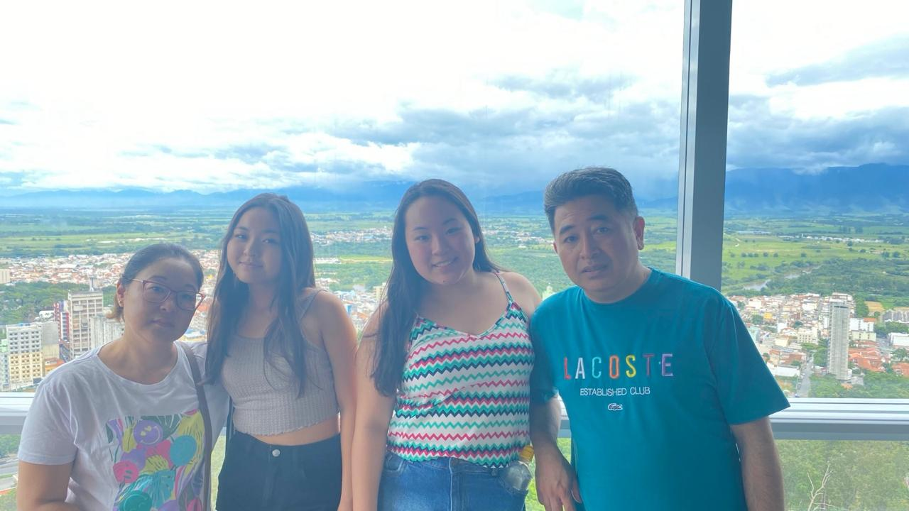
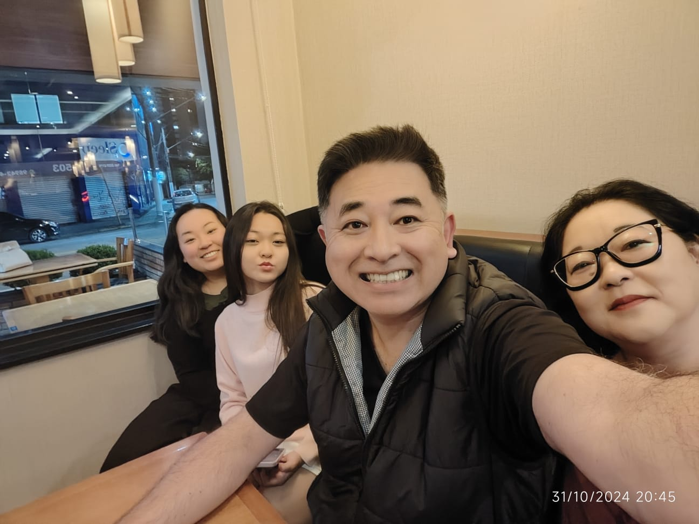
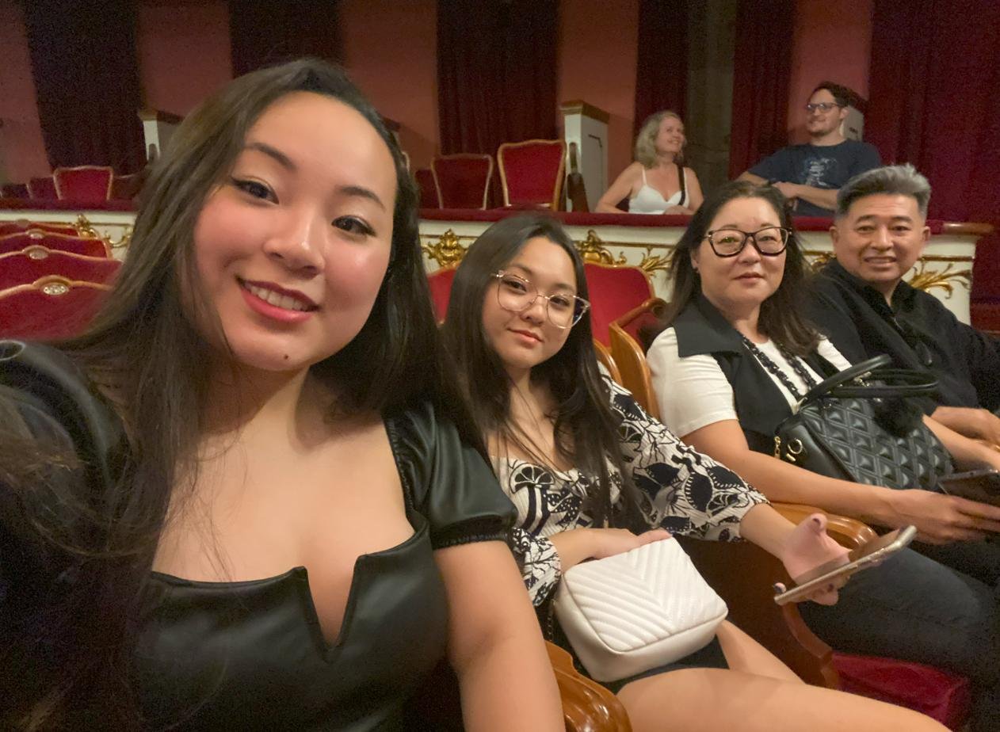
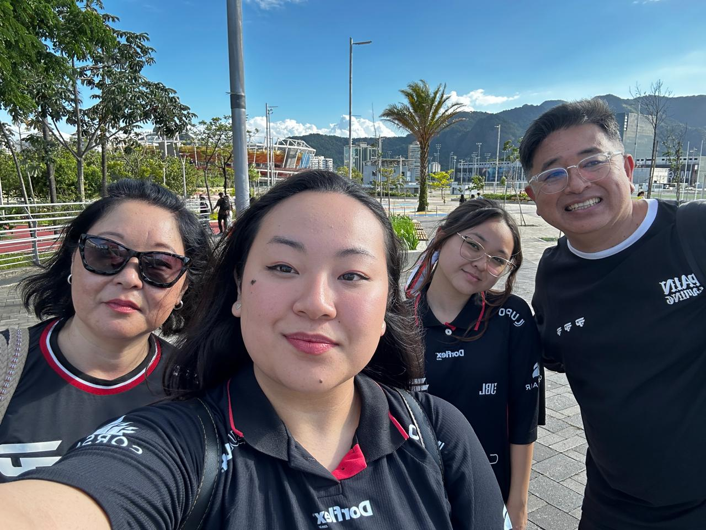
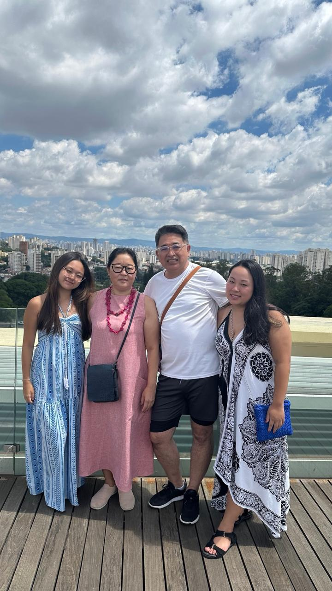
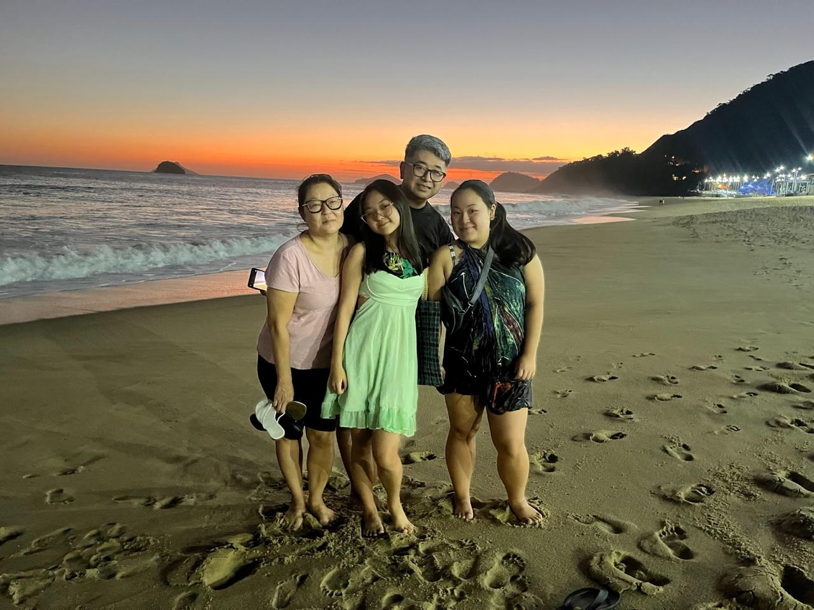

Bem-vindo à Viagem.Log!
Olá! Meu nome é Camila Yukari Jodai, criadora do site Viagem.Log! Esse site é o resultado do meu projeto individual da SPTech.
Sou apaixonada em conhecer lugares diferentes e principalmente, com minha família! A minha paixão por viagens me inspirou a criar este site, onde podemos compartilhar nossas experiências conhecendo os lindos lugares que o mundo nos oferece!
Agradeço pela visita!





